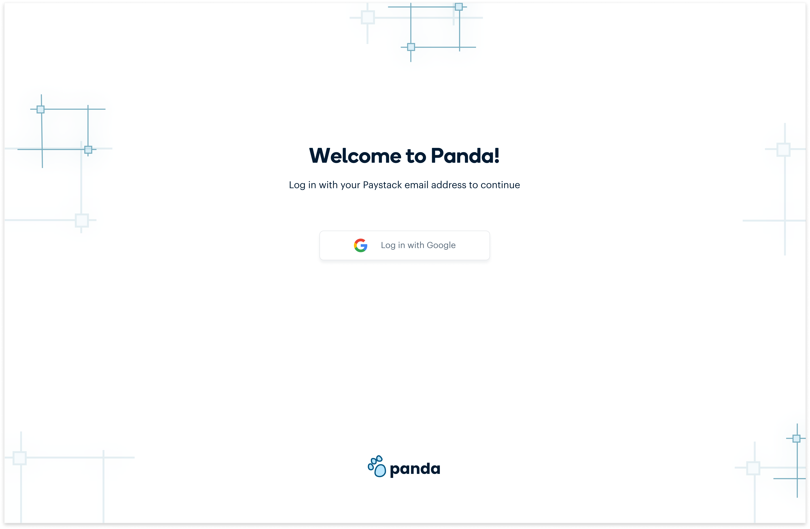

Panda is an asset generator that was designed for internal use within Paystack.

The design studio team at Paystack produced all the graphic assets that were used by various teams across the company. These graphic assets included social media posts for events, product launch announcements, certificates, zoom backgrounds, etc. The requests for these assets were very frequent, and they caused 2 major problems;
To address these problems, we needed to explore how we could streamline the creation of graphic assets by implementing an assets generator that would;
I worked on this project with a team of 7 people. 2 backend engineers, a frontend engineer, a DevOps engineer, a product manager, and another product designer. I worked with the other designer to conduct research, define the user flow, and design the prototypes.
The design studio team shared a detailed brief sharing the issues they had been experiencing, and what they envisioned Panda to be. Based on the brief they shared, we created a list of assumption statements. We were assuming that;
Our next step was to speak with our identified target users to validate our assumptions, as well as fill in any knowledge gaps that we had. The goals of our research were:
In addition to the interviews, we also did some secondary research into some sites like Canva, Pixelied, and Stencil, which were providing similar services.
Our initial idea was to create two separate portals for Panda;
However, during our brainstorming session, we started thinking deeply about how these would work. There were 2 things to consider:
The first one was;
How can we make sure that all the assets produced by Stacks look consistent (in terms of spacing and layout), and match the Paystack brand?
We figured out a solution for this. Instead of letting the Stacks directly edit the template, we thought about showing them a preview of the template, and providing them with a form that they could fill to edit that template. The form provided would depend on the template they wanted to edit, and the text fields would have character limits to ensure that any content added to the template did not mess up the layout.
The second one was:
How exactly will the portal for the design studio team function?
While thinking through the answer to this question, we discovered some potential problems with designing a separate portal for the design studio. We already knew that the design studio team made use of advanced applications like Figma in their day-to-day work, so the questions were:
The answer to both questions was “No”, so we decided to discard the portal for the design studio team. We decided that the templates could already be uploaded by the engineers, and the Stacks could then make use of those templates to generate their assets.
With Panda, we were trying to achieve this new workflow;

The first step in the design process was to define the user flow for desktop and mobile.


We also worked on the low fidelity wireframes to determine what the basic structure would be. We decided to have a single page design with 3 distinct sections.

Before using Panda, Stacks have to log in with their Paystack email addresses.
This is the Panda empty state, that shows when no event has been selected yet. To begin, a stack would choose an asset from the asset type dropdown.

After choosing an asset type, a dynamic form is generated and Stacks can fill the input fields with the information they want on their asset. They can also choose from the illustrations provided.

After filling the form, Stacks can click on the Generate preview button to see how their asset will look across different platforms.

Stacks can then download the assets for all platforms or can download for specific platforms.
We provided a simple walkthrough for Stacks, to serve as a guide if it was ever needed. This step is triggered by clicking on the help icon at any point during the process.